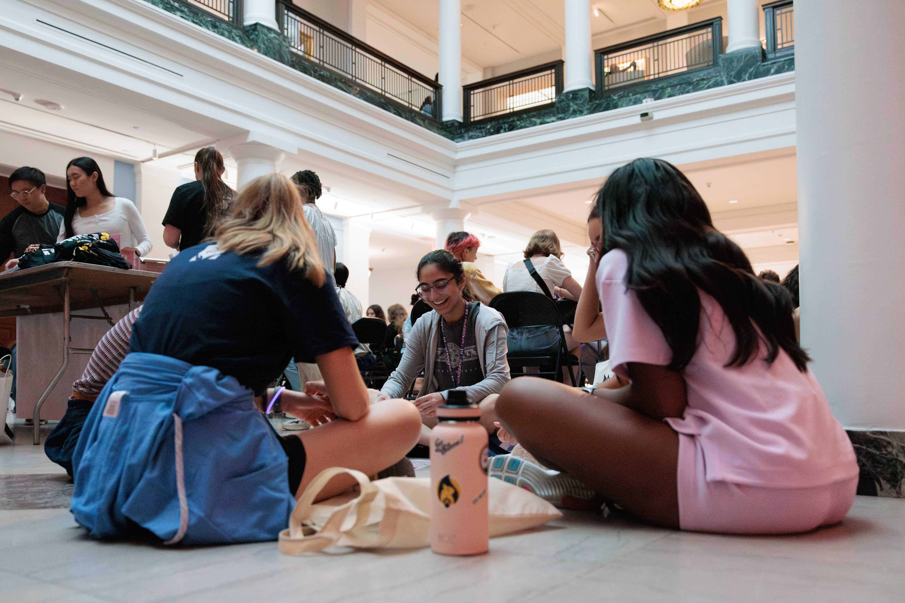

UMich Counseling and Psychological Services (CAPS)
The University of Michigan University Health and Counseling (UHC) is committed to supporting the health of UMich students, and this includes their mental health.
The University of Michigan Counseling and Psychological Serivces (CAPS) offers various counseling services, such as Teletherapy, Individual Peer Counseling, Togetherall, and more.
To make an appointment to receive support, please see the CAPS appointment page linked below.
CAPS Services Links:
- Let's Talk - a free program for students starting their mental health journey.
- Individual Peer Counseling - a program that connects students to a counselor that is around the same age as them and has similar interests to provide students with a more relaxed environment to find support.
- Uwill Teletherapy Services - a subset of CAPS that allows students to have teletherapy with professionals for free.

CAPS Location and Hours
- Michigan Union Fourth Floor
- Monday - Thursday: 8am - 6pm
- Friday: 8am - 5pm
- Saturday & Sunday: Closed
Urgent Support
CAPS offers support for those with urgent/crisis needs. These services are confidential and free for UMich students currently enrolled.
Their operating hours may differ from the regular CAPS hours, so please see the CAPS Urgent Support Webpage for more information on receiving urgent support.